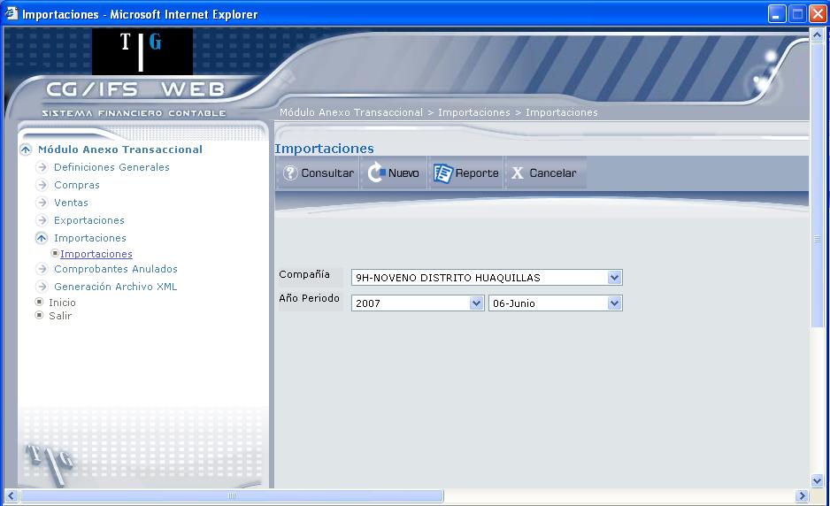
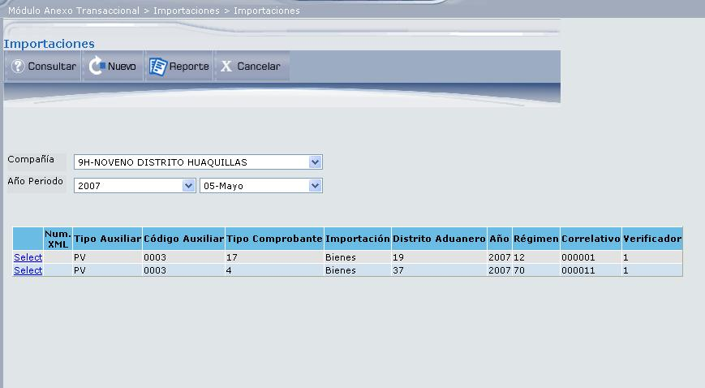
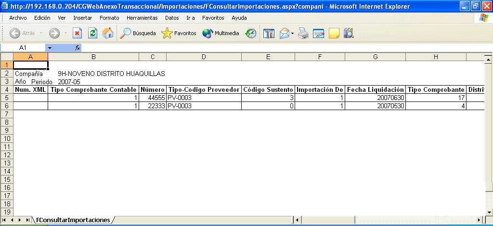
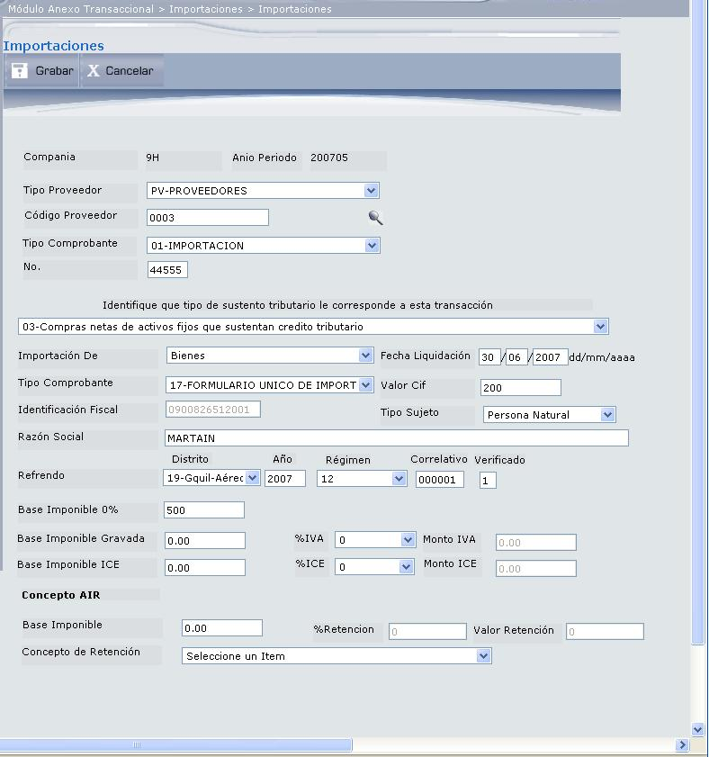

Importaciones
Esta opción permite trabajar con la información de Importaciones. La gestión es similar a las compras. La pantalla que despliega es la que muestra la Figura 3.39.

Figura 3. Listado de Importaciones.
Mediante esta pantalla se ingresan datos que permitirán consultar o crear un registro de importaciones.
Compañía:
Seleccione la compañía para la que se va a consultar o registrar la importación.
Año Periodo:
Seleccione el año y el periodo en el que desea consultar o registrar una importación.
BOTONES


Figura 3. Resultado consulta de Importaciones.
Seleccione la importación dando clic en el vínculo Select, que despliega el detalle del registro y que podrá ser actualizado con el botón Corregir Información.


Figura 3. Reporte de Importaciones.

La información de Importaciones está descrita en la ficha técnica del SRI.
Si usted realiza importaciones de bienes o pagos al exterior por servicios deberá presentar esta información. En el caso de importación de bienes, usted reportará a nivel de refrendo los valores cancelados en la Aduana, en la desaduanización del bien, indicando valores como: base imponible y valor de IVA e ICE.
En el caso de pagos al exterior, reportará los valores correspondientes a las retenciones en la fuente de Impuesto a la Renta.

Figura 3. Detalle de Importaciones.
Compañía:
Despliega el código de la compañía, año y periodo de registro de la importación.
Tipo Proveedor:
Seleccione el tipo de proveedor, esto permitirá filtrar la información para un determinado tipo de proveedor.
Código Proveedor:
Seleccione el proveedor a quien se le realizará la importación, presionando el icono ()
Tipo Comprobante:
Seleccione el tipo de comprobante contable con el que se registrará la importación.
No. :
Digite el número de comprobante de importación.
Identificación del sustento tributario:
Seleccione si el comprobante ingresado sustenta crédito tributario, costos o gastos.
Las posibles opciones son las siguientes:
- El código 00 solamente será utilizado por las instituciones financieras, para reportar los pagos de adquisiciones de bienes o prestaciones de servicio que se efectúan por Convenio de débito o Recaudación, donde la institución financiera actuó como agente de retención.
- El código 01 debe ser utilizado para todas aquellas prestaciones de servicios o adquisiciones de bienes distintos de inventarios y activos fijos gravadas con derecho a crédito tributario que constan en la declaración de IVA y que no aplican en los códigos 03 y 06.
- El código 02 debe ser utilizado para todas aquellas prestaciones de servicios o adquisiciones de bienes distintos de inventarios y activos fijos gravadas que no dan derecho a crédito tributario y en consecuencia el IVA pagado se contabiliza directamente en costos o gastos y se refleja en la declaración de Impuesto a la Renta. Ej.: Notas de Venta, Adquisiciones que no tienen relación directa con producción o comercialización del producto, etc.
- El código 03 debe ser utilizado para todas aquellas adquisiciones de Activos Fijos gravadas con derecho a crédito tributario que constan en la declaración de IVA.
- El código 04 debe ser utilizado para todas aquellas adquisiciones de Activos Fijos que no dan derecho a crédito tributario y en consecuencia el IVA pagado se contabiliza directamente en costos o gastos y se refleja en la declaración de Impuesto a la Renta.
- El código 05 debe ser utilizado para registrar gastos relacionados a Viaje, hospedaje y alimentación cuyos comprobantes de venta están a nombre de los funcionarios de la empresa y no a nombre de la misma, pero que si constituyen gastos deducibles para Impuesto a la Renta.
- El código 06 debe ser utilizado para todas aquellas adquisiciones de Inventario gravadas con derecho a crédito tributario que constan en la declaración de IVA.
- El código 07 debe ser utilizado para todas aquellas adquisiciones de Inventario que no dan derecho a crédito tributario y en consecuencia el IVA pagado se contabiliza directamente en costos o gastos y se refleja en la declaración de Impuesto a la Renta.
- El código 08 debe ser utilizado para todas aquellas adquisiciones de bienes o prestaciones de servicios gravadas que constan en la declaración de IVA realizadas a través de la figura de reembolso de gasto.
- El código 09 debe ser utilizado para todas aquellas adquisiciones de gastos médicos y medicina prepagada que constan en la declaración de IVA, realizadas a través de la figura de reembolso de gasto.
Importación de:
Seleccione el tipo de transacción realizada, ésta puede ser: Bienes o Servicios.
Fecha Liquidación:
Con el formato dd/mm/aaaa digite en qué fecha se va a cancelar el valor de la Importación.
Tipo Comprobante:
Seleccione el tipo de comprobante utilizado en la transacción que se va a registrar. Este campo debe ser ingresado en forma obligatoria en el registro de Importaciones. Los tipos de comprobantes que puede seleccionar son:
- Documento Único de Importación (DUI) , Declaración Aduanera Simplificada (DAS) o Declaración Aduanera Única (DAU) (Solamente para bienes)
- Nota de crédito (Tanto para bienes como para servicios)
- Nota de débito (Tanto para bienes como para servicios)
- Comprobante de Reembolso de Gastos (Tanto para bienes como para servicios)
Valor Cif:
En este campo obligatorio se debe ingresar el valor CIF de los bienes importados o el valor del pago efectuado al exterior. En el caso que el Monto de Importaciones o pago al exterior sea cero debe registrar 0.00.
Cuando el tipo de comprobante sea Nota de Crédito o Nota de Débito, este campo debe ser llenado con el valor CIF de la Nota de Crédito o Nota de Débito.
Identificación Fiscal:
Corresponde al número de Identificación tributaria en el país de domicilio fiscal del Proveedor que se despliega al seleccionar el proveedor y contiene 13 caracteres.
Tipo Sujeto:
Seleccione el tipo de proveedor con quien se realiza la transacción. Identifica si el proveedor es una persona natural o una sociedad (persona jurídica). Debe ser ingresado en forma obligatoria.
Razón Social:
Corresponde al nombre del proveedor del exterior.
Referendo:
Solo se ingresa en caso de Importación de Bienes y corresponde al número registrado por la aduana (refrendo) con el cual se realizó el registro de la importación. El campo contiene 16 caracteres numéricos. Cuando el tipo de comprobante sea Nota de Crédito o Nota de Débito, este campo deberá ser llenado con el número de refrendo del comprobante original. La estructura del refrendo debe cumplir con el siguiente esquema:
127 2007 70 123456 1
Distrito Año Régimen Correlativo Verificado
(3 caracteres) (4 caracteres) (2 caracteres) (6 caracteres) (1 caracter)
No. de Documento Transporte:
Digite el número de documento del transporte o flete. Este número se ingresa si se trata de una exportación de bienes.
No. Identificación Fiscal del Cliente:
Despliega el número de identificación tributaria en el país de domicilio fiscal del cliente.
Razón Social:
Despliega el nombre o razón social del cliente.
Base Imponible 0%:
Solo se reporta en caso de Importación de Bienes. Corresponde al valor de la importación gravada con tarifa 0% o exento. Debe registrar 0.00 en el caso de que no exista Base Imponible 0%.
Base Imponible Gravada:
Digite el valor de la Base Imponible Gravada y seleccione el porcentaje de IVA, el monto de IVA se calcula automáticamente de los datos ingresados. Solo se reporta en caso de Importación de Bienes. Corresponde al valor de la importación gravada con tarifa 12% en el momento de la desaduanización. Debe registrar 0.00 en el caso de que no exista Base Imponible 12%.
Base Imponible ICE:
Digite el valor de la base Imponible ICE y seleccione el % de ICE, para que se calcule el Monto ICE. Solo se reporta en caso de Importación de Bienes. Base Imponible de las importaciones de bienes gravados con ICE sin incluir el impuesto. Si no tiene importaciones gravadas con ICE, entonces en este campo debe registrar 0.00
Concepto AIR:
Solo se reporta en caso de Importación de Servicios e identifica a la retención por los pagos realizados al exterior. Los campos a ingresar son los siguientes:
- Base Imponible: Digite al valor sobre el cual se realizó la retención en la fuente de Impuesto a la Renta.
- Concepto Retención: Seleccione el concepto de la retención
- % Retención: Se desplegará el porcentaje de la retención según el concepto seleccionado.
- Valor Retención: Desplegará el valor retenido que se calculará de la Base Imponible y el % de Retención.
BOTONES
Created with the Personal Edition of HelpNDoc: Free EPub producer